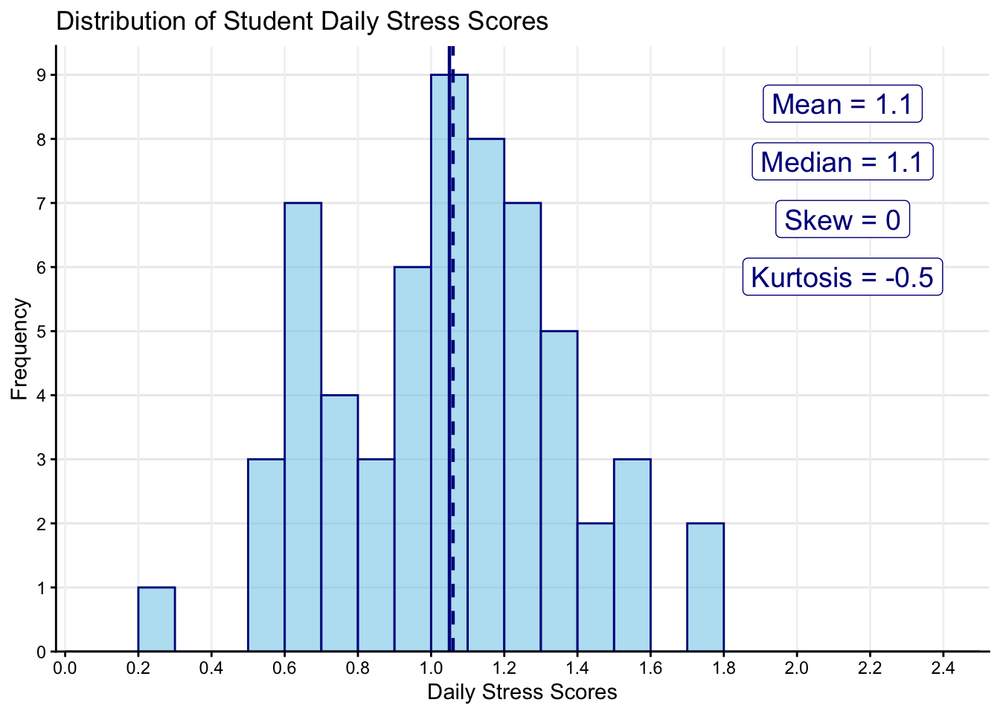
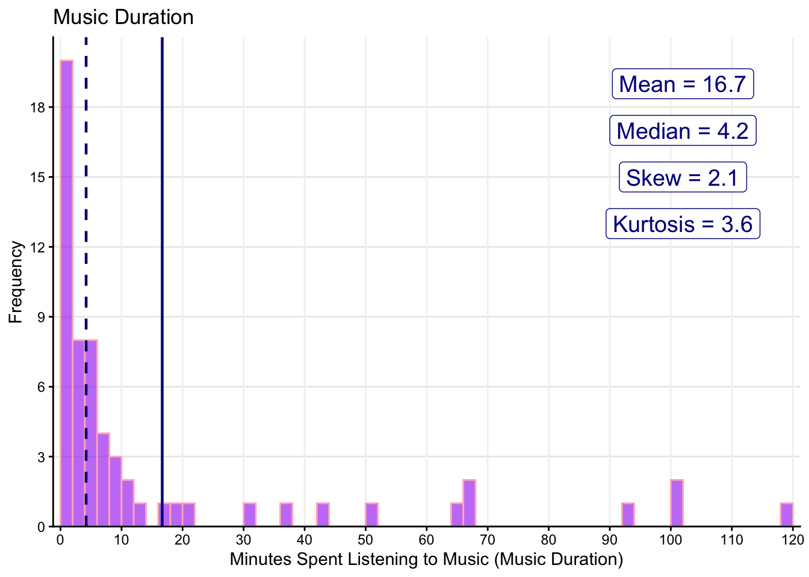
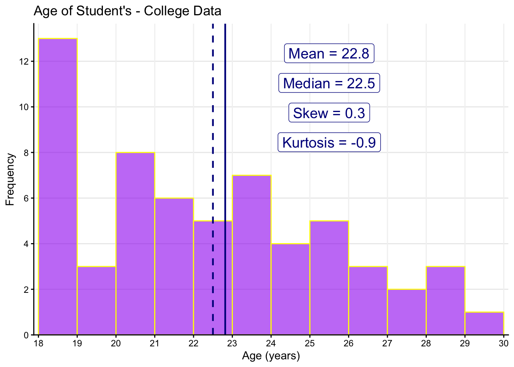
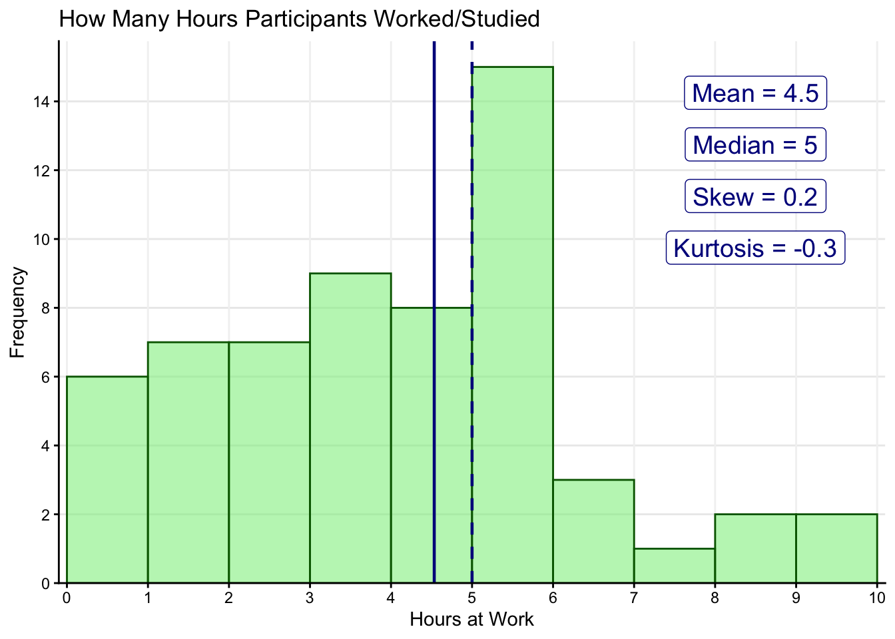
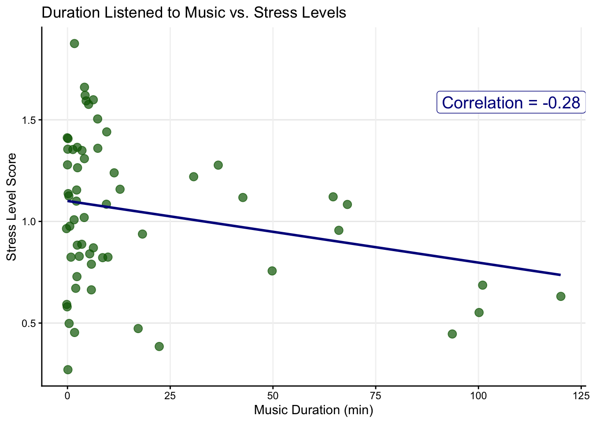
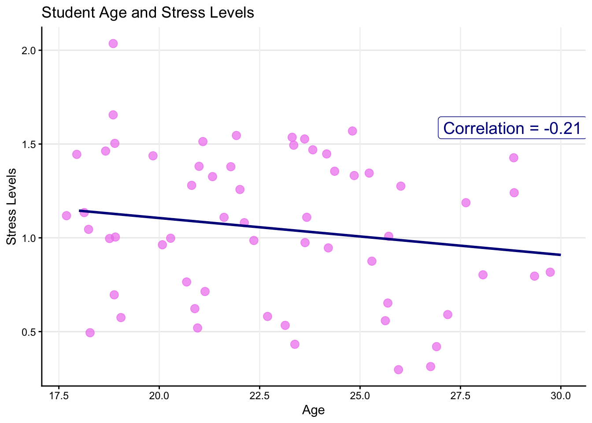
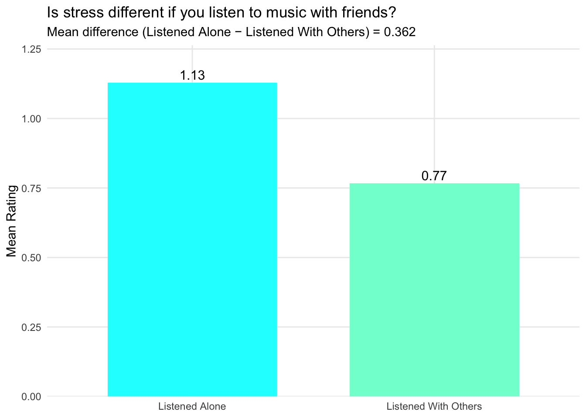
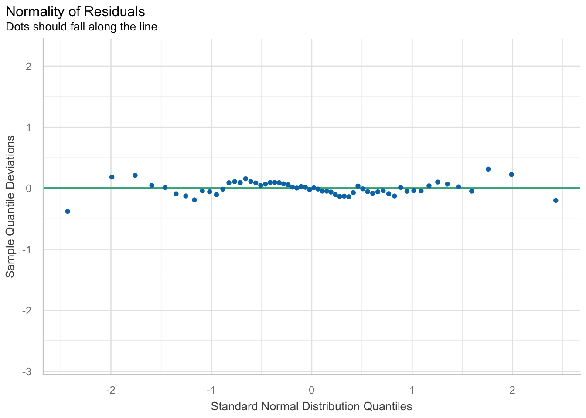
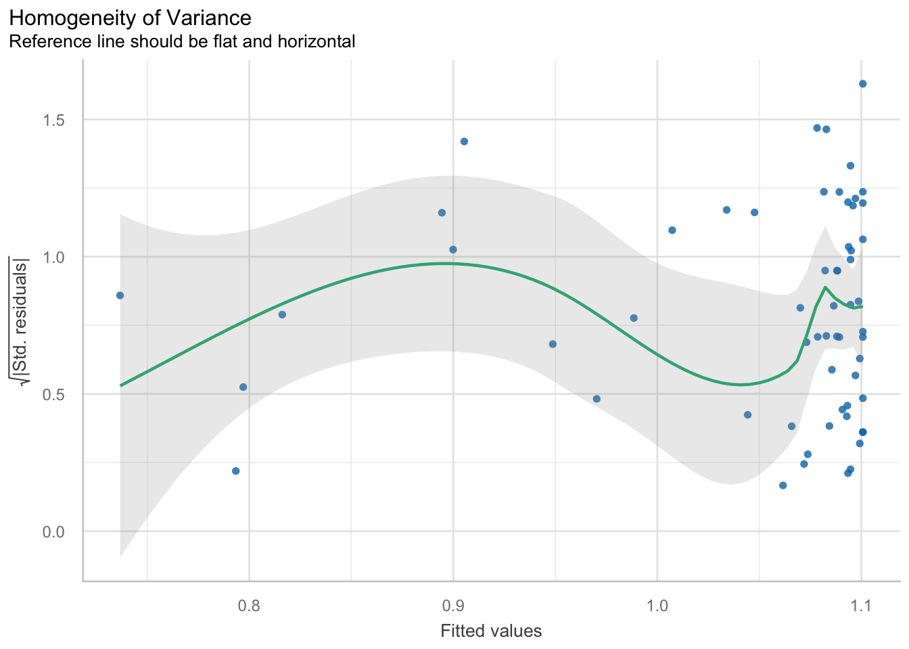
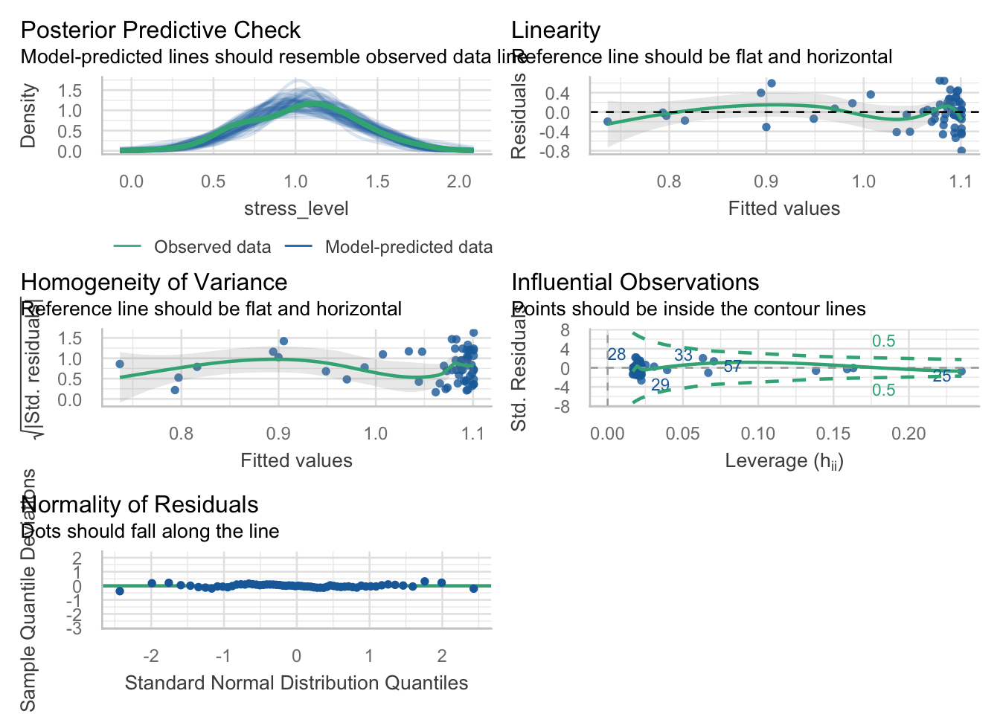

library(tidyverse)
library(janitor)
library(report)
library(gt)
library(ggplot2)
library(readr)
library(corrplot)
library(sjPlot)
library(psych)
library(performance)
library(jtools)
library(parameters)
source("load_plot_functions.R")Does Listening to Music Actually Lower Stress?
A Look at Stress Levels in College Students
INTRODUCTION
College students often turn to music as a quick way to relax during stressful times, especially during finals or long study days. We put on our headphones hoping the right playlist will calm us down, but is it actually effective? In this project, I explored the relationship between music listening and daily stress levels among college students. Specifically, I wanted to know whether listening to music for longer periods of time was really associated with feeling less stressed.
My research question was simple: Does the amount of time spent listening to music reduce daily stress levels? This question matters for psychology and students’ wellness because stress is a major factor in academic burnout. Music is one of the most popular, accessible coping tools students use daily. If music truly reduces stress, even a bit, it could offer students an easy way to deal with stress during busy weeks.
My Hypothesis: Students who listen to more music will have lower stress levels, controlling for age and whether they listened with others.
The simulated data used for this analysis was fabricated to reflect a study by Linnemann et al. (2018). For this study a class survey was taken in which 60 college students reported their daily stress levels and music-listening habits. The goal of the study was to capture everyday behaviors rather than lab-based measures. Because the data came from everyday student reports rather than a lab experiment, the findings are especially relatable to college life. At the same time, this also means the data are self-reported and non-experimental, so the results should be interpreted carefully.The survey included questions about how long students listened to music, how calming they thought it was, their age, and whether they listened alone or with others.
The main outcome variable was daily stress level, measured on a scale from 0 to 2.5. The focal predictor was minutes spent listening to music on the day of the survey. I also included age and listening with others as control variables because both could be related to stress separately from time spent listening to music (i.e., music duration).
Data source:
Linnemann et al. (2018) Music Listening and Stress in Daily Life: A Matter of Timing
Read in data & update factor levels
music_data <- read_csv(here("data", "music_stress_daily_sim_N60_2.csv")) %>%
mutate(with_others = factor(with_others, # RECODE FACTOR
levels = c(0,1), # ORDER LEVELS
labels = c("Listened Alone", "Listened With Others"))) # ADD LABELSHow many student’s listened to music alone versus with others?
tabyl(music_data$with_others) # CHECK: Did the factor get coded correctly? music_data$with_others n percent
Listened Alone 47 0.7833333
Listened With Others 13 0.2166667WHAT THE DATA LOOKED LIKE
Before running any models, I wanted to see the shape of the variables key to my analysis. Looking at the distribution of the outcome variable is important part of the analysis process to evaluate the regression assumption normality and get a better sense of what the data looks like.
Descriptive Statistics: Stress & Time Listened to Music
music_data %>%
select(stress_level, music_listened_self, age, workload_today) %>%
describe() vars n mean sd median trimmed mad min max range
stress_level 1 60 1.05 0.31 1.06 1.05 0.35 0.3 1.73 1.43
music_listened_self 2 60 0.35 0.48 0.00 0.31 0.00 0.0 1.00 1.00
age 3 60 22.82 3.29 22.50 22.65 3.71 18.0 30.00 12.00
workload_today 4 60 4.53 2.33 5.00 4.48 1.48 0.0 10.00 10.00
skew kurtosis se
stress_level -0.03 -0.55 0.04
music_listened_self 0.61 -1.65 0.06
age 0.31 -0.91 0.42
workload_today 0.18 -0.32 0.30Histogram plot: Most students reported mild to moderate stress, with no extreme outliers
# Use `hist_plot()` to visualize the distribution of continuous outcomes & predictors
hist_plot(
data = music_data,
binwidth=.1,
x_var = stress_level,
x_label = "Daily Stress Scores",
fill = "skyblue", color = "darkblue",
break_min =0, break_max =2.5 , break_by = .2,
mean_line = TRUE, median_line = TRUE,
skew_value = TRUE, kurtosis_value = TRUE,
title = "Distribution of Student Daily Stress Scores"
)
The histogram of daily stress levels showed that most students reported mild to moderate stress. The average stress score was about 1.05 and the median was very similar at 1.06, which means the center of the distribution was around 1.1 on the stress scale. The scores ranged from 0.30 to 1.73, so there were no extreme high stress values in this sample. The skew was close to zero, which means the stress scores were fairly balanced on both sides of the mean. Overall, stress looked approximately normal, which is important because stress is the main outcome variable to be used for the regression model analyses.
Histogram plot of Music-listening minutes were highly skewed, most students listened briefly.
hist_plot(
data = music_data,
binwidth = 2,
x_var = duration_min,
x_label = "Minutes Spent Listening to Music (Music Duration)",
fill = "purple", color = "lightpink",
break_min = 0, break_max = 120, break_by = 10,
mean_line = TRUE, median_line = TRUE,
skew_value = TRUE, kurtosis_value = TRUE,
title = "Music Duration")
The distribution of music listening duration looked very different from the stress scores. Most students listened to music for only a short amount of time (under 10 minutes), but a few students listened for much longer periods, creating a long right tail. The distribution of music duration is positively skewed as shown in the histogram by the long tail pointing to the right. The mean was 16.7 minutes, but the median was only 4.2 minutes, which shows that the average was pulled to the right by a small number of students who listened for a long time. This is important to notice because a “typical” student listened for much less time than the mean suggests.
Histogram plot of Students’ Age
hist_plot(
data = music_data,
binwidth = 1,
x_var = age,
x_label = "Age (years)",
fill = "purple", color = "yellow",
break_min = 18, break_max = 30, break_by = 1,
mean_line = TRUE, median_line = TRUE,
skew_value = TRUE, kurtosis_value = TRUE,
title = "Age of Student's - College Data"
)
The sample included students ranging from 18 to 30 years old. The average age was about 23 years, which is the center of the age distribution (M = 22.8, SD = 3.3). The standard deviation was 3.3, meaning most students were within +/- 3 years of the average age. The plot also shows that there were many students in the 18–19 age range, but there were still several older students in their mid-to-late twenties. Since age varies across the sample, it makes sense to include it as a control variable in the regression model.
Histogram plot of Hours of Reported Work (Study + Job Hours)
hist_plot(
data = music_data,
binwidth = 1,
x_var = workload_today,
x_label = "Hours at Work",
fill = "lightgreen", color = "darkgreen",
break_min = 0, break_max = 10, break_by = 1,
mean_line = TRUE, median_line = TRUE,
skew_value = TRUE, kurtosis_value = TRUE,
title = "How Many Hours Participants Worked/Studied"
)
The distribution of overall daily workload (employment and study hours) shows that students had a range of work responsibilities. Workload ranged from 0 to 10 hours, with an average of 4.53 hours and a median of 5 hours. This means a typical student reported spending about 4–5 hours working or studying that day. There were also a few students who reported higher workloads around 8–10 hours. This variable is useful to look at because workload could be related to stress, even if it is not the main focus of this project.
Look at associations using scatterplots
Scatter Plot of Stress Scores by Music Duration
scatter_plot(
data = music_data,
x_var = duration_min,
x_label = "Music Duration (min)",
y_var = stress_level,
y_label = "Stress Level Score",
point_color = "darkgreen",
corr_line = TRUE,
title = "Duration Listened to Music vs. Stress Levels"
)
A small downward trend suggests longer listening may be linked to slightly lower stress (\(r = -.21\)).
Scatter Plot of Stress Levels by Age of Students
scatter_plot(
data = music_data,
y_var = stress_level,
y_label = "Stress Levels",
x_var = age,
x_label = "Age",
point_color = "violet",
corr_line = TRUE,
title = "Student Age and Stress Levels"
)
The plot shows that for student’s age & stress show a small negative correlation (\(r = -.21\)), with stress levels decreasing slightly among older participants in the sample.
Estimate correlations & significance
music_data |>
select(stress_level, duration_min, age, workload_today) |>
tab_corr(
triangle = "lower",
digits = 2
)| stress_level | duration_min | age | workload_today | |
| stress_level | ||||
| duration_min | -0.28* | |||
| age | -0.21 | 0.13 | ||
| workload_today | 0.11 | 0.07 | 0.09 | |
| Computed correlation used pearson-method with listwise-deletion. | ||||
The correlation table shows only one significant association with stress scores and the continuous predictors. That is, the minutes of music listened to was negatively correlated with stress (\(r = -.28, p < .05\)). Age was also negatively associated with stress and daily workload hours positively associated but both correlations were statistically insignificant.
Examination of Categorical Predictor
What is the difference in predicted stress scores for students who listened to music with others compared to listening alone with_others (0 = Listened Alone, 1 = Listened With Others)?
mean_diff_barplot(
data = music_data,
outcome = "stress_level",
group_var = "with_others",
colors = c("cyan", "aquamarine"),
title = "Is stress different if you listen to music with friends?"
)
The bar plot shows a clear difference in average stress levels between the two groups. Students who listened to music alone had a higher average stress score of 1.13, while students who listened with others had a lower average stress score of 0.77. The mean difference was 0.362 points, meaning students who listened alone reported stress levels about 0.36 points higher than students who listened with others. This suggests that listening with other people may be linked to lower stress, which is why it makes sense to include this variable as a control in the regression model.
ANALYSIS APPROACH
Based on what I have seen, I came up with my final hypothesis: Students who listened to music for longer duration will report lower stress levels, controlling for age and whether they listened with others. I chose stress as the outcome because it’s an important psychological variable for college students. Music duration was my chosen focal predictor because it captures the amount of exposure to music. Age as well as social listening were included as controls since both could influence stress independently of duration.
Due to the fact that stress levels is a continuous variable, I used a linear regression model, which examines how an outcome variable is associated with a predictor variable while holding control variables constant. I started with a simple regression of the outcome regressed on my main predictor in my hypothesis. Then I added the control variables one-by-one. This strategy is called forward step-wise regression.
MAIN RESULTS - REGRESSION
Model 1: Outcome & predictor only
m1 <- lm(stress_level ~ duration_min,
data = music_data)
summ(m1, digits= 3, model.fit = FALSE)| Observations | 60 |
| Dependent variable | stress_level |
| Type | OLS linear regression |
| Est. | S.E. | t val. | p | |
|---|---|---|---|---|
| (Intercept) | 1.101 | 0.046 | 24.163 | 0.000 |
| duration_min | -0.003 | 0.001 | -2.202 | 0.032 |
| Standard errors: OLS |
# tab_model(m1,
# digits = 3,
# show.se = TRUE,
# show.ci = TRUE,
# show.r2 = FALSE)In model-1, the intercept represents the predicted average stress score, \(\alpha = 1.101\), among students who listened to zero minutes of music daily. The coefficient for music duration means that for every additional minute of music listened to the model predicted stress to decrease by .003 points (\(\beta_1 = -0.003, p < .05\)). This predictor was statistically significant (\(p = .032\)), meaning that there is evidence that minutes spent listening to music is associated with lower stress. However, this association is not necessarily a causal effect. We need to check whether this relationship is confounded by omitted variables. Additionally, since stress was measured on a scale from about 0 to 2.5 in this data, the size of the effect is small, even though it was found to be statistically significant.
Model 2: Add the 1st control variable
m2 <- lm(stress_level ~ duration_min + age,
data = music_data)
summ(m2, digits= 3, model.fit = FALSE)| Observations | 60 |
| Dependent variable | stress_level |
| Type | OLS linear regression |
| Est. | S.E. | t val. | p | |
|---|---|---|---|---|
| (Intercept) | 1.473 | 0.276 | 5.333 | 0.000 |
| duration_min | -0.003 | 0.001 | -2.021 | 0.048 |
| age | -0.016 | 0.012 | -1.365 | 0.178 |
| Standard errors: OLS |
# tab_model(m2,
# digits = 3,
# show.se = TRUE,
# show.ci = FALSE,
# show.r2 = FALSE)In Model-2 the intercept now is not interpretable because when we hold all the control variables at zero the model is making a prediction for students with age = 0 which is not a meaningful prediction. Interestingly, the coefficient for duration_min stayed approximately the same in terms of magnitude at \(- .003\) but the p-value shifted from \(p = .032\) in the previous model to \(p = .048\). This means that the relationship is still statistically significant, but only barely below the standard .05 cutoff. The coefficient for age is negative, indicating that older students tended to report slightly lower stress levels, but this relationship is not statistically significant (\(\beta_2 = -0.016, p = .178\)).
Model 3: Final Model
m3 <- lm(stress_level ~ duration_min + age + with_others,
data = music_data)
summ(m3, digits= 3, model.fit = TRUE)| Observations | 60 |
| Dependent variable | stress_level |
| Type | OLS linear regression |
| F(3,56) | 7.674 |
| R² | 0.291 |
| Adj. R² | 0.253 |
| Est. | S.E. | t val. | p | |
|---|---|---|---|---|
| (Intercept) | 1.525 | 0.248 | 6.139 | 0.000 |
| duration_min | -0.002 | 0.001 | -1.447 | 0.153 |
| age | -0.016 | 0.011 | -1.506 | 0.138 |
| with_othersListened With Others | -0.332 | 0.087 | -3.824 | 0.000 |
| Standard errors: OLS |
In the final model, the intercept represents the predicted stress level when all predictors are held at zero. In this model, that means the predicted stress level for a participant who listened to zero minutes of music (duration_min = 0), listened alone, and had an age of zero. Since age = 0 is not a realistic value, the intercept is not substantively meaningful on its own. However, we still use the intercept as part of the regression equation to calculate predictions by inputting realistic values of age and music duration.
The predictor coefficient estimated for listening to music changed from statistically significant in Model-2 to insignificant in Model-3. The coefficient is still small and negative, but now it is not significant (\(\beta_1 = -0.002, p = .153\)). This means that students who listened to more minutes of music had slightly lower predicted stress, but after controlling for age and whether they listened with others, there was not strong evidence that music duration reliably predicted stress. In other words, the relationship between music duration and stress became weaker once the social listening variable was added.
The additional covariate comparing students who listened with others versus students who listened alone was statistically significant (\(\beta_3 = -0.332, p < .001\)). Notably, students who listened to music with others had predicted stress scores about .332 points lower than students who listened alone, holding music duration and age constant. This suggests that the social side of music listening may matter more for stress than simply the number of minutes spent listening.
Compare regression results across Model-1, Model-2, and Model-3
tab_model(m1, m2, m3,
digits = 3,
dv.labels = c("Model-1", "Model-2", "Model-3"),
show.se = TRUE, show.ci = FALSE, show.r2 = FALSE)| Model-1 | Model-2 | Model-3 | |||||||
| Predictors | Estimates | std. Error | p | Estimates | std. Error | p | Estimates | std. Error | p |
| (Intercept) | 1.101 | 0.046 | <0.001 | 1.473 | 0.276 | <0.001 | 1.525 | 0.248 | <0.001 |
| duration min | -0.003 | 0.001 | 0.032 | -0.003 | 0.001 | 0.048 | -0.002 | 0.001 | 0.153 |
| age | -0.016 | 0.012 | 0.178 | -0.016 | 0.011 | 0.138 | |||
| with others [Listened With Others] |
-0.332 | 0.087 | <0.001 | ||||||
| Observations | 60 | 60 | 60 | ||||||
Across Models 1-3, the relationship between music duration and stress stayed in the expected direction, meaning more music listening was still associated with slightly lower stress. However, the relationship became weaker after adding the control variables. Music duration was significant in Model-1 and just barely significant in Model-2, but it was no longer significant in Model-3 after adding whether students listened alone or with others. This suggests that how students listened to music may matter more than simply how many minutes they listened.
MAKING SENSE OF THE RESULTS
The main question was whether music duration predicted stress. The coefficient for duration in my final model was -0.002, which means that each additional minute of music listening was associated with a very small decrease in predicted stress. However, the p-value was 0.153, which is above the usual 0.05 cutoff. This means the relationship was not statistically significant in the final model. In this sample, I do not have strong evidence that listening to music for longer periods reliably predicted lower stress after controlling for age and whether students listened alone or with others.
The most interesting pattern was actually the “listening with others” variable. Students who listened with others had predicted stress levels about 0.332 points lower than students who listened alone, and this result was statistically significant. This suggests that maybe the social side of music matters more than the number of minutes. That feels believable to me because music is often tied to shared experiences like driving with friends, singing together, or just feeling less alone. This result makes sense to me because we as humans are social creatures, and sometimes the company of someone else can lift our spirits more than the music itself.
Test Regression Assumptions (Model Diagnostics)
- Assumption 1: Normality of residuals
- Assumption 2: Homoscedasticity
- Assumption 3: Linerity
Assumption 1: Test Normality Assumption using a ‘qq-plot’
plot(check_normality(m1))
I checked the normality of the residuals using a QQ plot. A QQ plot shows whether the model’s errors are roughly normally distributed. In this plot, most of the points fall very close to the reference line, with only small deviations at the ends. This suggests that the residuals are approximately normal. Overall, the normality assumption appears to be met, which supports the use of the linear regression model.
Assumption 2: Test Homogeneity Assumption
plot(check_heteroskedasticity(m1))
I also checked the homogeneity of variance assumption, which means that the spread of the residuals should be fairly similar across the range of predicted values. The plot does not show a strong funnel shape, which is a good sign. However, the line is not perfectly flat, and there is some unevenness in the spread of residuals. Since the residual spread is a little uneven across fitted values, it suggests that the model has some heteroskedasticity. Because of this, I would not say the assumption is perfectly met, but there does not appear to be a major violation.
Assumption 3: Test Linearity Assumption
plot(check_model(m1))
Finally, I checked the linearity assumption using the residuals vs. fitted plot. This plot helps show whether the relationship between the predictors and stress is reasonably linear. The line is mostly close to horizontal, although it is not perfectly flat. There is also some clustering of points, which makes sense because the model includes a categorical variable for whether students listened alone or with others. Overall, I do not see a strong curved pattern, so the linearity assumption appears mostly reasonable.
Summary of Regression Tests:
Altogether, the regression diagnostics suggest that the linear regression model is appropriate enough for interpreting the results. The residuals appear approximately normal, there is no major funnel shape in the residual spread, and the linearity plot does not show strong curvature. The assumptions are not perfect, especially for homogeneity of variance, but there are no major red flags that would make me reject the model. This means the estimated coefficients can be interpreted, but the results should still be discussed carefully because the sample is small and the data are observational.
IMPLICATIONS, & LIMITATIONS
Overall, the results did not strongly support my original hypothesis. While the direction of the effect matched the expectations which was, more music listening was associated with slightly lower stress, the size was extremely small and not statistically significant. One possible explanation is that how students listen to music matters more than how long they listen for. Duration may not capture emotional engagement, genre, or purpose (relaxing, to cry to, background noise, etc). Another explanation is that stress is influenced by external factors that weren’t measured in this dataset.
There are a few limitations worth noting. The data did come from self-reports, which can be imprecise. The sample size was relatively small (N= 60), which reduces the ability to detect subtle relationships. Due to the fact that this was a correlational survey, no causal claims can be made, meaning that we cannot say for sure that listening to music causes less stress. Despite these limitations, the project raises interesting questions about how students use music to regulate emotions. A future study might measure emotional engagement with music or even examine different genres to see whether certain types of music are more effective for stress reduction.
In the end, longer music listening did not significantly predict lower stress among college students in this study. However, listening with others showed a small trend toward lower stress, suggesting that social experience of music may matter more than duration. These results remind us that stress is complex, and while music may help, it is just one piece of a very large puzzle for student well-being. Overall, this study suggests that how we engage with music, emotionally or socially, may play a bigger role in stress relief than simply how long we listen.
Practice rendering!
(Extra Credit Opportunity for Final Project Submission)
- Review your script for typos, rendering will only work when all the code is correct!
- Click the
Renderoption in the menu bar at the top of your script. - If an error message shows up in the terminal read it! It will provide the line number where the render failed.
- Keep rendering unit you catch all the typos!
- Once your document renders successfully, open the
HTMLfile in theweb browserto make sure your writing, tables, and plots all appear correctly. - To submit this rendered file right-click on the web-page and choose
Print. Next choose the optionSave as PDF. Submit the saved PDF file to receive extra credit!